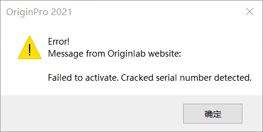

最終更新日:2021/5/9
Originをアクティブ化したときに次のようなエラーメッセージが表示された場合
| 無効なプロダクトキー | アクティベーションに失敗しました。シリアル番号の欠損が検出されました。 |
|
|
 |
正しいシリアル番号でOriginをインストールしたかを再度確認してください。
ヘルプ：バージョン情報メニューを選択して、インストールされているシリアル番号を確認できます。OriginLabから受け取った番号と同じかどうかを確認してください。異なる場合は、このクイックヘルプページの指示に従って修正してください。
キーワード:ライセンス, LE, ラーニングエディション, エラー, アクティブ化できない, 欠損